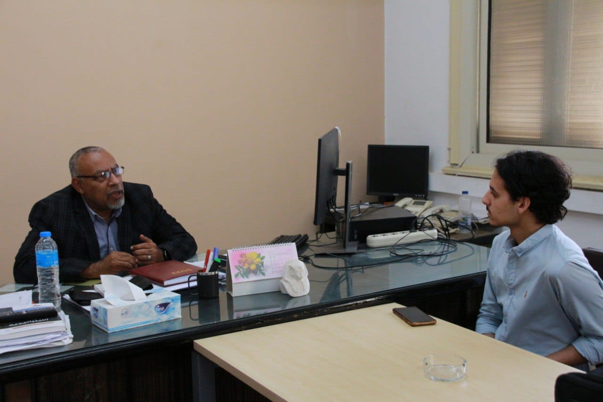

علا عزام: أنا اول من صمم شنطة كلاتش في مصر

- في عالم يعاني من ندرة المياه، تبرز تقنية الاستمطار كحلاً مبتكراً لتلبية احتياجات الإنسان من المياه، ويشكل الاستمطار حلاً مستداماً لمناطق العالم التي تعاني من شح المياه، مما يسهم في تعزيز الأمن المائي وتقليل التوترات الناجمة عن ندرة المياه. وبالتحدث مع استاذ "احمد سعد" المدير العام بالبحث العلمي في هيئة الأرصاد الجوية أوضح لنا العديد من المعلومات عن تقنية الاستمطار وفوائدها والتحديات التي تواجهها بالإضافة إلي الابتكارات الحديثة التي تعزز فعاليتها وتوسع نطاق تطبيقها .
- الاستمطار هو عملية جمع الرطوبة من الجو وتحويلها إلى مياه صالحة للشرب أو للاستخدام في الزراعة والصناعة.
- تتم عملية الاستمطار بواسطة مجموعة متنوعة من التقنيات مثل الأجهزة التكنولوجية التي تجذب الرطوبة من الهواء وتحويلها إلى ماء، وأنظمة التبريد التي تتيح تكثيف البخار في الهواء للحصول على الما،. وذلك يتم بوضع نواه داخل السحابة لتتشكل على شكل الامطاروتتكثف، ويجب ان تكون في درجه حراره معينه لكي تتحول جزيئات الماء من الصورة السائلة الى الغازية، ونستنتج من ذلك ان عمليه الاستمطار هي عمليه تعزيزيه للسحب لكي تمطر باستخدام مواد كيميائية غير ضاره .
- يعتبر الاستمطار وسيلة مستدامة لتوفير المياه، خاصة في المناطق الجافة حيث قد تكون الأمطار نادرة. كما أنه يقلل الضغط على موارد المياه الجوفية والسطحية.
- تشمل عيوب الاستمطار التكلفة العالية لتركيب وصيانة الأنظمة ووضع رادارات لمعرفه ان كانت السحابة مهيئة للاستمطار ام لا ، والاعتماد على طاقة خارجية لتشغيلها. بالإضافة إلى ذلك، قد لا يكون الاستمطار فعالاً في بعض المناطق الجغرافية حيث يكون الهواء جافاً جداً.
- على الرغم من أن الاستمطار يمكن أن يكون جزءاً من الحل، إلا أنه ليس بالحل الشامل. يجب أن يتم النظر إلى الاستمطار كجزء من استراتيجية شاملة تتضمن أيضاً إدارة الموارد المائية بشكل أفضل وتحسين كفاءة الاستخدام.
- لا يمكننا اخذه بالشكل التجاري نهائيا لعدم معرفتنا ب"اين سوف تمطر السحابة"، لان بعد تلقيح السحابة قد تنجح عمليه الاستمطار وقد تفشل ، وبعد نجاحها فقد تمطر في منطقه أخرى ، فالاستمطار ليس بعمليه مؤكده لاعتماد هذه العملية على النسب والاحتمالات باستخدام العلم .
- يعمل العلماء والمهندسون على تطوير تقنيات الاستمطار بشكل مستمر، مثل استخدام الطاقة الشمسية لتشغيل أنظمة الاستمطار وتحسين كفاءة جمع الرطوبة من الهواء.
- نعم، هناك العديد من الأمثلة الناجحة على استخدام التقنيات المختلفة للاستمطار في العديد من البلدان، مثل الصين وروسيا الإمارات العربية المتحدة التي أصبحت متقدمة جدا في هذا المجال بالإضافة الى وأستراليا وتشيلي، حيث تمكنت من توفير المياه في مناطقها الجافة بفضل الاستمطار.
- في الإسلام، لا يوجد نص قرآني أو حديث نبوي يتحدث مباشرة عن هذه التقنية لأنها من مستجدات العصر. ولكن يمكن النظر إلى هذه القضية من خلال مبادئ عامة في الشريعة الإسلامية، مثل مبدأ السعي للفائدة وتجنب الضرر، والتدخل في الطبيعة بقصد الإصلاح ومعالجة المشكلات مثل الجفاف، وأنها لا تُستخدم لأغراض ضارة أو مضرة بالبيئة أو المجتمع.
- يُعتبر الاستمطار خياراً واعداً، ولكنه ليس الحل الوحيد. يجب أن يتم النظر إليه كجزء من استراتيجية متعددة الأوجه تتضمن أيضاً حماية الموارد المائية الحالية وتعزيز كفاءة الاستخدام وتحسين إدارتها
التعليقات
من الفنانين المحترمين جدا
اكتب تعليق